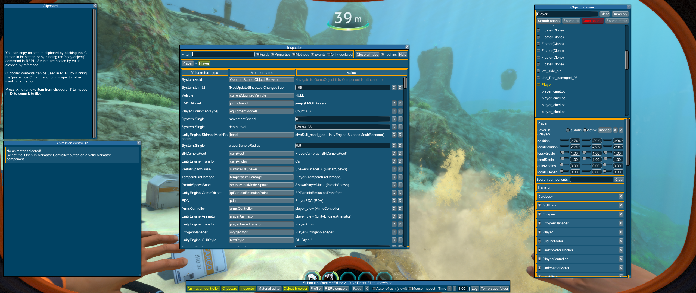

Composition and inheritance
The Subnautica games are written using the Unity development environment. You can find out a wealth of information about Unity from a huge number of sources, though you might want to start at the Unity home page.
While an in-depth knowledge of Unity isn't required for modding, understanding it's core concepts will make it much easier to implement some of your ideas.
What is Composition?
One of the first "Eureka!" moments for me, was learning about composition and how it differs from my ingrained knowledge of object oriented programming (OOP). I'm going to try to explain in the way that I rationalise this in my head, so please bear with me!
For me, OOP is about class hierarchy. When I first started trying to mod Subnautica, I was straight into asking myself questions about what classes inherited certain behaviour, what the parent, child and grandchild classes and methods were and so on.
I went hunting in dnSpy, looking for classes and class members that gave me the hierarchy that I was expecting. And, as you can guess, what I was expecting was nowhere to be found.
I think the easiest way I've found to think of it is to look at the LiveMixin class. This class provides methods and fields that give something Life - not in the literal sense, but in terms of managing player and creature health - and death!
In an inheritance world, you might define a parent class called LivingThing, from which a number of classes inherit behaviour. So players, fish, creatures etc. You'd say that Player is a LivingThing. This is great, and I can create any number of parent classes that share this truth, such as a fish or a land animal. All can inherit, and the pattern remains true: Fish is a LivingThing, LandAnimal is a LivingThing. This is all good, and inheritance in this way is still very much a valid and useful pattern in Unity and mod development.
Now consider this: you might want a Seatruck to have a concept of health. The properties and methods associated with the Seatruck's state of repair may pretty much align to my LivingThing class. So maybe Vehicle could also inherit from this class? We're starting to challenge the model here, as to say SeaTruck is a LivingThing is pushing it somewhat! So do we duplicate LivingThing and create a new parent class called Vehicle? Now we're maintaining two classes with very similar functionality. Extra work for us and additional risks if we don't keep them in sync.
Back to our LivingThing class. What if we want another parent class called TwoLegged, which has properties and methods that are useful for two legged beings, like our Player? Do we slot that in between Player and LivingThing? What is we want to add even more granularity in the future, how much re-factoring of our code will we need to do to maintain these more and more complex relationships? We can very quickly end up with a lot of complex class hierarchies that are very difficult to understand and maintain. And what if I change a parent class to fix a problem for one child and it breaks the others? Things get very messy and very sensitive to change - that is, I fix something and in the process I break something else.
Composition takes a different approach to inheritance. Instead of Player is aLifeObject, composition says Player has a LifeObject. In addition, Creature has a LifeObject, Seatruck has a LifeObject and so on. In fact, anything can have a LifeObject - they don't have to be a LifeObject. The Player can also have a TwoLeggedObject, and make use of the functionality that this gives. There is no direct inherited behaviour or inheritance hierarchy, and so the risk of breaking parent and child class functionality when you make changes is greatly reduced. In addition, you have the flexibility to add that functionality to any object in your game, simply by dropping in the component. Okay, well obviously it's not quite a simple as that, as typically a component will interact in some way with other components on your game objects, but that's the principle and hopefully you get the idea.
Why this helps us mod!
There are a number of ways composition helps us in modding Unity games such as Subnautica. Let's have a look at some of the main ones.
Unity deals in Game Objects and Components
A lot of Unity, and therefore Subnautica, is about GameObjects and Components. You can think of a GameObject as a container for one or more Components, organised in a hierarchy. Lots of things that we want to change and tweak in mods is tied to GameObjects and Components, and we have lots of tools and tricks up our sleeve to get at them.
We can easily find out what components make up a game object
Using tools like Unity Explorer, we can see exactly what components are attached to a given GameObject, as well as see the GameObject hierarchy, in any Unity game. Instead of trawling through hierarchies of inheritance, we can see at a glance what classes we can start to explore and exploit. For example, here I've run a simple search for the Player game object instance in Below Zero:

So, instead of having to travel up and down a class hierarchy, you can simply see here what components go to make up the player on the right, as well as the GameObject hierarchy that we can access there on the left. You can see that the Player has components such as OxygenManager, PlayerController, a RigidBody - you can start to understand exactly what components make up the player and what part they play. And since each component is a class, you can start delving into dnSpy to look for methods to hook into and parameters to tweak.
Unity makes it really easy to get hold of components
If you know what component you want to tweak, composition and Unity make it very easy for us to get hold of an instance so that we can work with it. All Unity components inherit from the MonoBehaviour class, and that gives them some special abilities that we can use:
GetComponent<>()
The GetComponent<>() method let's us grab an instance of a component based on it's type, from any given component or game object. For example:
LiveMixin playerHealth = player.GetComponent<LiveMixin>();
You should be aware that this will grab you a single instance. If you know there may be more than one instance, you should use:
GetComponents<>()
The GetComponents() method returns an array of components instances of that type. You can then use iterators such as foreach to traverse the array. For example, to get all the AttackOnDamage components from a Snowstalker instance:
AttackOnDamage[] attackDamages = snowstalker.GetComponents<AttackOnDamage>();
foreach (AttackOnDamage attackDamage in attackDamages)
{
Logger.Log(Logger.Level.Debug, $"{attackDamage.name}");
}
GetComponentInChildren<>() / GetComponentsInChildren<>()
The Get...InChildren<>() methods will search for a component instance or grab all component instances from all children of a Component or GameObject. Note that this is iterative, so this will also cover all children's children and their children and so on. For example, to get all of the Aquarium Modules attached to the Seatruck:
SeaTruckAquarium[] seaTruckAquariums = seaTruck.GetComponentsInChildren<SeaTruckAquarium>();
foreach (SeaTruckAquarium seaTruckAquarium in seaTruckAquariums)
{
Logger.Log(Logger.Level.Debug, $"{seaTruckAquarium.name}");
}
GetComponentInParent<>() / GetComponenstInParent<>()
You can probably guess what the Get...InParent<>() methods do, and that's to look at a level up in the GameObject hierarchy to find an instance or instances of a component type.
In conclusion...
So, that's a very brief overview of composition, what it means and how it helps us get at methods and parameters that we can tweak and enhance. If you'd like to know more, I suggest referring to any number of Unity guides out there on the interwebs, or even Unity's very own and very complete documentation.